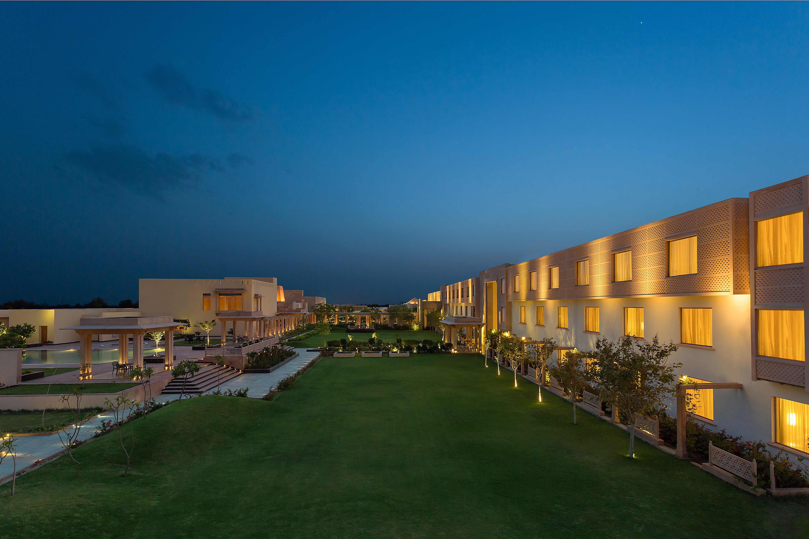
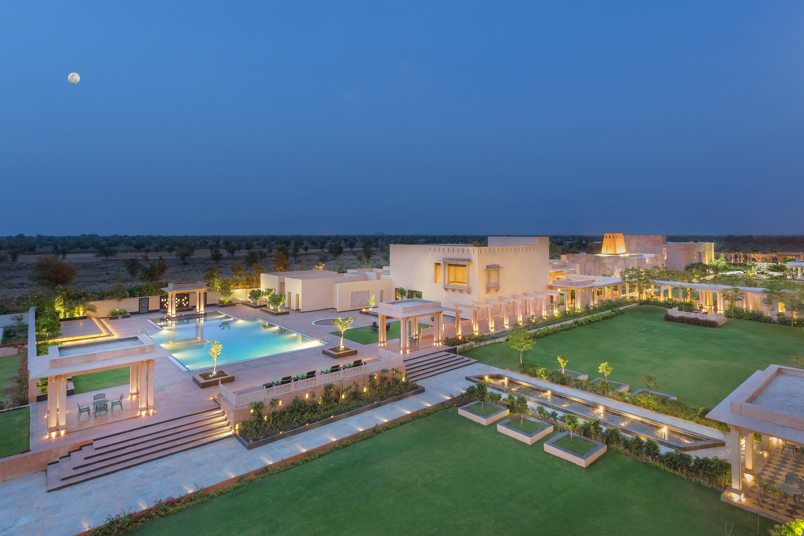

<div class="container project-view">
    
	<div class="row">
        <div class="col-md-8 project-images">
            
            
            
            
            
            
        </div>
        <div class="col-md-4">
            <div class="project-info">
                <h2>ITC WelcomHotel</h2>

                <div class="details">
                    <div class="info-text">
                        <span class="title">Location</span>
                        <span class="val">Jodhpur, Rajasthan</span>
                    </div>

                    <div class="info-text">
                        <span class="title">Category</span>
                        <span class="val">Luxury Wedding</span>
                    </div>
                </div>

					On the edge of the Thar Desert, set against the sombre and arid landscape of Rajasthan is located the WelcomHotel Jodhpur. 
					<br/><br/>
					As a tribute to the city of Jodhpur, laden with history, culture & monuments that enliven the royal era of the princely state; 
					WelcomHotel Jodhpur endeavors to bring about an element of grandeur through food, music, colour and an ethnic mélange of unique experiences
					            
			</div>
        </div>
    </div>
</div>